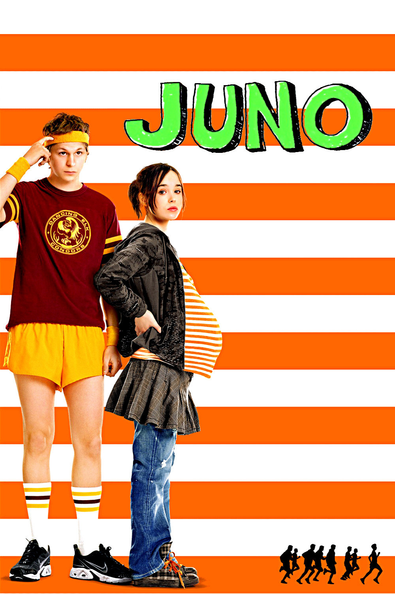
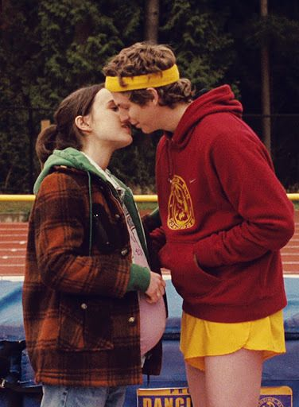
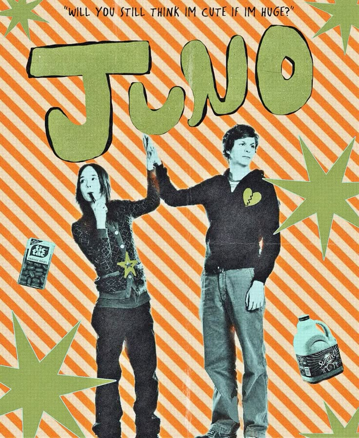

Comedy, Drama, Coming-of-Age
2007
96 minutes
Jason Reitman
Juno follows witty and independent teenager Juno MacGuff after an unexpected pregnancy leads her to choose adoption. As she navigates family, friendship, and first love, Juno discovers that growing up means facing life's biggest decisions with honesty, humor, and heart.